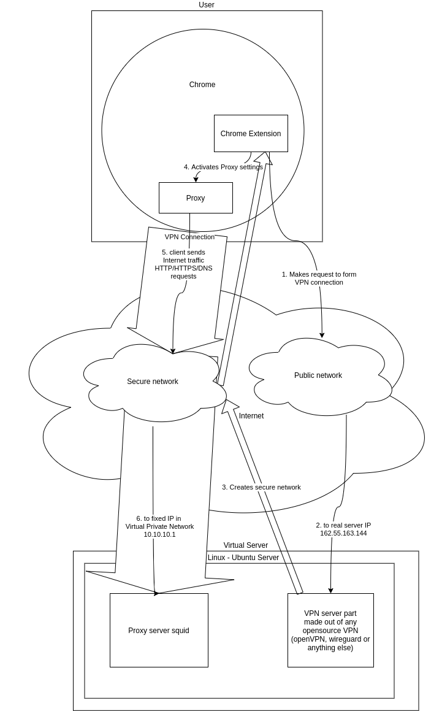

Welcome to js vpn client’s documentation!¶
Description¶
a program capable to raise VPN tunnel from browser javascript to server, and redirecting browser traffic through proxy at the server.
What we expect to receive:¶
chrome-extension code + instruction on how to set up server-side part (preferably for Linux / Ubuntu)
secured HTTP/HTTPS/DNS traffic from the client to the server
What we would prefer to see in the code:¶
Readability in English
Testing
Self-documentation.
Example of the extension¶
manifest.json¶
{
"name": "Getting Started Example",
"description": "Build an Extension!",
"version": "1.0",
"manifest_version": 3,
"background": {
"service_worker": "background.js"
},
"permissions": [
"proxy"
]
}
background.js¶
const ProxyHandler = function () {
console.log('ProxyHandler is initialized');
};
ProxyHandler.prototype = {
activateProxy: function () {
var config = {
mode: "fixed_servers",
rules: {
singleProxy: {
scheme: "http",
host: "10.10.10.1",
port: 3128
},
bypassList: ["foobar.com"]
}
};
chrome.proxy.settings.set(
{ value: config, scope: 'regular' },
function () { }
);
},
};
myProxy = new ProxyHandler();
function enableVpnTunnelToServer() {
// insert your code here
}
chrome.runtime.onInstalled.addListener(() => {
enableVpnTunnelToServer();
myProxy.activateProxy();
console.log("activating proxy");
});
How we see the architecture:¶
Notes¶
Server side can made out of any open source VPN. OpenVPN is preferable, but anything else (like Wireguard or IPSec) will work too.
Possibly it could be made with IPSec, at least we saw working javascript example that claims being made with it.
We don’t need any GUI to it.